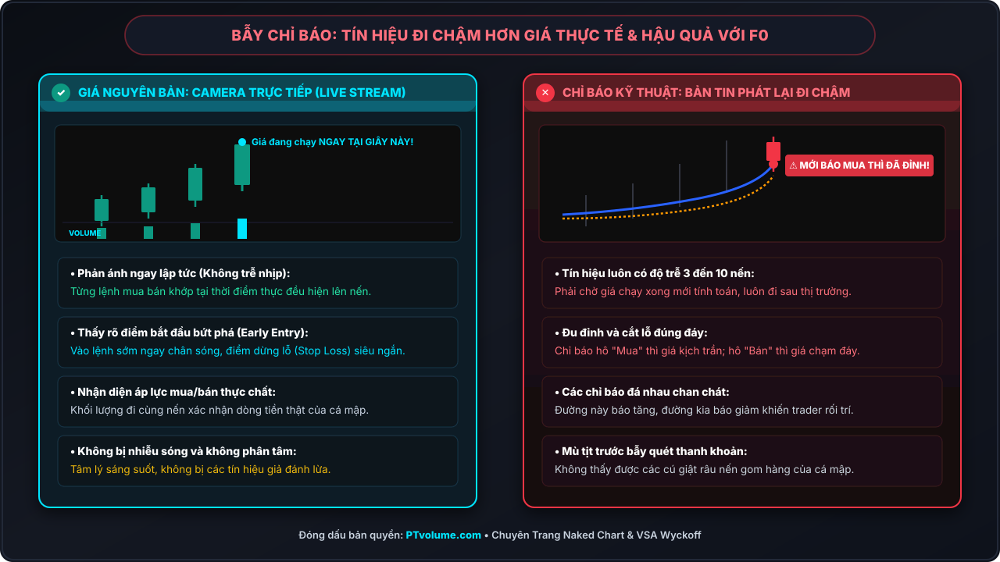
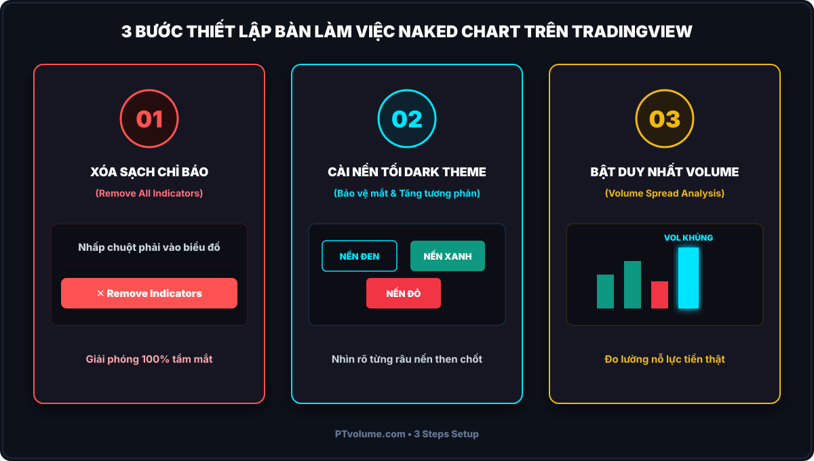
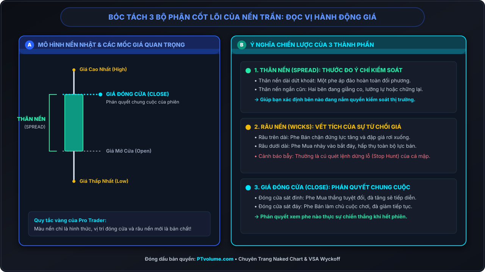
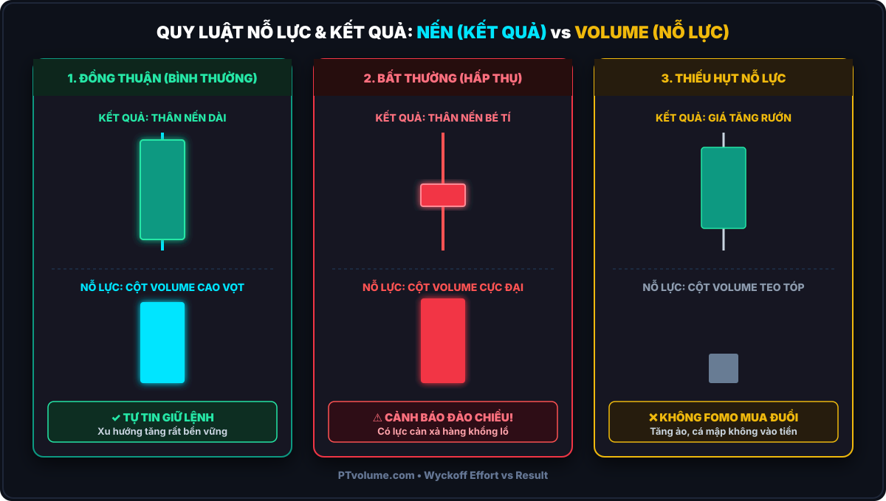

"Thị trường tài chính không di chuyển vì một đường chỉ báo RSI cắt lên hay cắt xuống. Giá di chuyển duy nhất bởi lực mua và lực bán thực tế của dòng tiền trên thị trường. Muốn thấy sự thật, hãy học cách nhìn thẳng vào nến và khối lượng nguyên bản."
— PTvolume Institutional Desk

1. Bẫy Tín Hiệu Đi Chậm – Tại Sao Lạm Dụng Chỉ Báo Lại Dễ Khiến Người Mới Thua Lỗ?
Trên thị trường tài chính, hầu hết người mới tham gia thường bắt đầu bằng cách cài đặt hàng loạt công cụ chỉ báo kỹ thuật: từ các đường trung bình động (MA), dải băng Bollinger Bands, mây Ichimoku, cho đến RSI, MACD hay Stochastic. Tâm lý chung của người mới là tin rằng: càng gắn nhiều công cụ phân tích hiện đại thì việc dự đoán đường đi của giá sẽ càng chuẩn xác. Màn hình giao dịch nhanh chóng biến thành một "ma trận" xanh đỏ chằng chịt, khiến bản thân cây nến – thứ quan trọng nhất phản ánh tiền bạc thực tế – bị che khuất gần như hoàn toàn.
Thế nhưng sau một thời gian giao dịch, kết quả quen thuộc của hơn 90% người mới vẫn là: tài khoản hao hụt, tâm lý luôn trong trạng thái hoang mang và mệt mỏi. Nguyên nhân gốc rễ không phải vì thị trường quá khó lường, mà vì người mới đang tự làm khó mình khi đặt trọn niềm tin vào các công cụ vốn dĩ luôn đi chậm hơn thực tế.
Camera Trực Tiếp (Live Stream) vs Bản Tin Tóm Tắt Phát Lại
Để hiểu vì sao các chỉ báo lại phản bội bạn vào những thời khắc then chốt, hãy hình dung một sự so sánh rất bình dân và thực tế:
- Nến và Cột Khối Lượng là Camera Trực Tiếp (Live Stream): Từng lệnh Mua và Bán của các quỹ đầu tư lớn lẫn nhà đầu tư cá nhân diễn ra ngay tại giây phút này đều được ghi nhận trực tiếp lên thanh nến và cột khối lượng. Đó là sự thật đang xảy ra ngay trước mắt bạn.
- Chỉ Báo Kỹ Thuật chỉ là Bản Tin Tóm Tắt Phát Lại: Mọi đường chỉ báo như MA20, RSI14 hay MACD đều phải đợi các cây nến đóng cửa xong, lấy dữ liệu giá quá khứ của 14 hay 20 cây nến trước rồi mới đưa vào công thức tính toán. Nghĩa là giá thực tế phải chạy xong một quãng đường dài rồi, đường chỉ báo mới từ từ uốn lượn lết theo sau!
Việc cố gắng dự đoán hướng đi tiếp theo của thị trường bằng một đống chỉ báo đi chậm chẳng khác nào bạn đang lái một chiếc xe chạy với vận tốc 100 km/h trên đường cao tốc, nhưng lại dán kín kính chắn gió phía trước và chỉ ngoái nhìn gương chiếu hậu xem đoạn đường mình vừa đi qua để quyết định đánh lái!
Chính độ trễ tự nhiên này đã tạo ra 3 bi kịch kinh điển mà bất kỳ người mới nào cũng từng nếm trải:
- Bẫy Đu Đỉnh và Bán Đúng Đáy: Khi đường chỉ báo kỹ thuật vừa kịp uốn cong lên và phát tín hiệu "Nên Mua", thì trên thực tế giá đã tăng một đoạn dài kịch trần. Người mới vội vã nhảy vào mua là vừa vặn đu ngay đỉnh. Ngược lại, khi chỉ báo cắt xuống báo "Bán tháo khẩn cấp", thì giá đã rơi chạm đáy và chuẩn bị bật tăng, khiến người mới cắt lỗ đúng ngay đáy!
- Tín Hiệu Đá Nhau Chan Chát (Tê Liệt Tâm Lý): Cùng một thời điểm, chỉ báo A báo nên Mua, nhưng chỉ báo B lại báo Quá Mua nên Bán; dải Bollinger Bands báo chạm biên trên nhưng MACD lại chưa cho tín hiệu. Trader đứng hình ở giữa, hoang mang không biết bấm nút nào, dẫn đến việc lỡ mất cơ hội đẹp hoặc vào lệnh lung tung theo cảm xúc.
- Mù Tịt Trước Đòn Gài Bẫy Của Cá Mập (Smart Money): Chỉ báo chỉ là các đường trung bình toán học vô hồn, chúng hoàn toàn không thể nhìn thấy những cây nến giật râu lừa gạt (Liquidity Sweep) hay những đợt âm thầm gom hàng của dòng tiền lớn.
2. Biểu Đồ Trần (The Naked Chart) Là Gì? Triết Lý Của Các Huyền Thoại Đầu Tư
Biểu đồ trần (The Naked Chart), đúng như tên gọi mộc mạc của nó, là một biểu đồ giá được dọn dẹp sạch sẽ 100% mọi chỉ báo kỹ thuật phụ trợ. Trên không gian làm việc của một Naked Chart Trader thực thụ, bạn chỉ giữ lại duy nhất 3 thành phần cốt lõi:
3 Thành Phần Duy Nhất Trên Biểu Đồ Trần
- Hành Động Giá Nguyên Bản (Raw Price Action): Thể hiện qua các thanh Nến Nhật (Candlesticks) hoặc Thanh giá (Bar Chart) ghi nhận 4 mốc giá cốt lõi: Mở cửa (Open), Cao nhất (High), Thấp nhất (Low), và Đóng cửa (Close) – OHLC.
- Khối Lượng Giao Dịch Thực Tế (Volume): Cột đo lường số lượng cổ phiếu, hợp đồng hoặc khối lượng tiền thật được trao tay tại mỗi cây nến.
- Các Vùng Giá Then Chốt (Key Horizontal Zones): Các mốc Cung – Cầu (Supply / Demand), Kháng cự – Hỗ trợ then chốt do chính hành vi giá trong quá khứ kiến tạo.
Phương pháp biểu đồ trần không hề mới lạ. Nó chính là cội nguồn của mọi trường phái giao dịch thành công nhất trong lịch sử tài chính:
- Jesse Livermore (Đầu thế kỷ 20): Ông kiếm được 100 triệu USD trong cuộc đại suy thoái 1929 hoàn toàn bằng nghệ thuật Đọc băng giá (Tape Reading) – chỉ nhìn vào biến động giá từng giây và khối lượng khớp lệnh thực tế trên dải băng giấy.
- Richard D. Wyckoff: Cha đẻ của phương pháp Wyckoff chỉ sử dụng biểu đồ giá thanh (Bar Chart) và cột khối lượng giao dịch để bóc tách 3 quy luật cung cầu chi phối toàn thị trường.
- Bob Volman & Al Brooks: Những bậc thầy Price Action hiện đại đã chứng minh rằng một biểu đồ trần sạch sẽ mang lại tỷ lệ Risk:Reward (R:R) và độ nhạy bén vượt xa bất kỳ thuật toán máy tính phức tạp nào.
| Tiêu Chí So Sánh | Hệ Thống Phụ Thuộc Chỉ Báo (Indicators) | Hệ Thống Biểu Đồ Trần (Naked Chart & VSA) |
|---|---|---|
| Tốc độ dữ liệu | Trễ từ 3 – 10 chu kỳ nến do phải qua công thức toán học trung bình. | Thời gian thực (Real-time): Nhận diện hành vi ngay khi nến đang hình thành. |
| Góc nhìn thị trường | Bị che khuất bởi đường vẽ, nhìn cây mà không thấy rừng. | Thông thoáng tuyệt đối, thấy rõ cấu trúc thị trường (Market Structure) Đỉnh – Đáy. |
| Điểm vào lệnh (Entry) | Vào lệnh muộn khi xu hướng đã đi được 50% – 70% quãng đường. | Bắn tỉa sát vùng cản (Sniper Entry) ngay tại điểm xuất hiện tín hiệu từ chối giá. |
| Tỷ lệ Rủi ro / Lợi nhuận (R:R) | Kém (thường chỉ đạt 1:1 hoặc 1:1.5 vì mức Stop Loss phải đặt rất xa). | Tối ưu vượt trội (Dễ dàng đạt tỷ lệ R:R từ 1:3 đến 1:5+ với Stop Loss chặt chẽ). |
| Khả năng thích ứng | Dễ bị gãy hệ thống khi thị trường chuyển trạng thái từ Sideway sang Trend. | Vận hành bền bỉ trên mọi chu kỳ, mọi khung thời gian và mọi loại tài sản. |

3. Hướng Dẫn Thiết Lập Biểu Đồ Trần Chuẩn Mực Cho Người Mới
Để bắt đầu luyện tập quan sát thị trường không chỉ báo, bạn cần thiết lập một môi trường làm việc tối giản và chuẩn mực (Clean Workspace) trên nền tảng biểu đồ của mình (như TradingView, MT4 hoặc MT5) qua 3 bước đơn giản:
Bước 1: Xóa Bỏ Toàn Bộ Chỉ Báo Phụ Trợ (Remove All Indicators)
Nhấp chuột phải vào màn hình đồ thị và chọn "Remove all indicators" (Xóa toàn bộ chỉ báo). Hãy dũng cảm tắt toàn bộ RSI, MACD, Stoch, Bollinger Bands. Ban đầu bạn có thể cảm thấy hơi "trống trải", nhưng đây là bước dọn dẹp bắt buộc để giải phóng đôi mắt và tâm trí.
Bước 2: Cài Đặt Giao Diện Nền Tối (Dark Theme)
Cài đặt màu nền đen chuyên nghiệp (Mã màu khuyến nghị: #0B0E14 hoặc #141822). Màu nền tối giúp giảm mỏi mắt khi theo dõi biểu đồ trong các phiên giao dịch kéo dài, đồng thời làm nổi bật độ tương phản của thân nến và các râu nến then chốt. Nến tăng chọn màu Xanh chuẩn (#089981) và nến giảm chọn màu Đỏ (#F23645).
Bước 3: Giữ Lại Duy Nhất Cột Khối Lượng Giao Dịch (Volume)
Chỉ báo duy nhất được phép tồn tại trên biểu đồ nến trần thực chiến là Khối Lượng Giao Dịch (Volume) nằm gọn gàng ở 15% - 20% cạnh dưới màn hình. Khối lượng không phải là chỉ báo toán học trễ; Khối lượng là số lượng giao dịch thực tế do sàn giao dịch cung cấp trực tiếp.

4. Bóc Tách 3 Thành Phần Cốt Lõi Của Nến Trần (Đọc Vị Hành Động Giá)
Nhiều người mới nhìn vào cây nến chỉ biết nó là màu Xanh (tăng) hay màu Đỏ (giảm). Nhưng với một nhà giao dịch biểu đồ trần chuyên nghiệp, mỗi cây nến là một chiến trường thu nhỏ phản ánh cuộc chiến giữa phe Mua và phe Bán. Bạn chỉ cần bóc tách đúng 3 thành phần cốt lõi sau đây – ai cũng có thể nắm bắt chỉ trong 30 giây:
4.1 Thân Nến (Spread) – Bên Nào Đang Nắm Quyền Kiểm Soát?
Thân nến là khoảng cách giữa giá Mở cửa và giá Đóng cửa. Độ dài của thân nến thể hiện biên độ di chuyển thực tế và ý chí của phe đang chiếm ưu thế:
- Thân nến dài vượt trội (Wide Spread): Thể hiện sự quyết đoán và áp đảo hoàn toàn của một bên. Nến xanh thân dài là phe Mua đang làm chủ thế trận; nến đỏ thân dài là phe Bán đang dốc toàn lực đè bẹp đối phương.
- Thân nến bé tí (Narrow Spread): Thể hiện sự do dự, chững lại hoặc cuộc giằng co quyết liệt giữa hai phe mà chưa bên nào chịu nhượng bộ.
4.2 Râu Nến (Bóng Nến / Wicks) – Vùng Bị Từ Chối & Bẫy Săn Thanh Khoản
Râu nến chính là "vết sẹo" ghi lại hành vi từ chối giá (Price Rejection) trong phiên giao dịch:
- Râu nến trên dài: Giá từng có lúc rướn lên rất cao, nhưng ngay sau đó bị một lực Bán cực mạnh dội ngược xuống, ép giá phải đóng cửa thấp hơn nhiều so với đỉnh. Đây là dấu hiệu phe Bán đang chặn trên quyết liệt.
- Râu nến dưới dài: Giá từng bị phe Bán đạp xuống rất sâu, nhưng lực Cầu mua bắt đáy của phe Mua đã nhảy vào hấp thụ toàn bộ và đẩy bật giá trở lại. Đây là dấu hiệu có lực đỡ ngầm rất mạnh.
- Cảnh báo bẫy cá mập: Râu nến dài nhô qua một ngưỡng hỗ trợ hoặc kháng cự thường là cú quét lệnh dừng lỗ (Stop Hunt) do cá mập giăng ra để cướp hàng của người mới trước khi giá chạy thật!
4.3 Mức Giá Đóng Cửa (Close Level) – Phán Quyết Chung Cuộc Của Phiên
Trong suốt phiên, giá có thể nhảy múa, tăng giảm liên tục, nhưng chỉ có mức giá đóng cửa mới là phán quyết cuối cùng khẳng định bên nào giành chiến thắng khi tiếng chuông hết giờ vang lên:
- Đóng cửa sát đỉnh cao nhất của nến: Phe Mua kiểm soát hoàn toàn tới tận giây cuối cùng. Đà tăng có xác suất rất cao sẽ tiếp diễn sang các nến tiếp theo.
- Đóng cửa sát đáy thấp nhất của nến: Phe Bán làm chủ tuyệt đối, đà giảm sẽ tiếp tục duy trì.
- Đóng cửa ở chính giữa cây nến: Thế trận cân bằng, phiên giao dịch kết thúc với sự lưỡng lự cao độ.

5. Sự Kết Hợp Hoàn Hảo: Nến Trần & Khối Lượng VSA (Quy Luật Nỗ Lực vs Kết Quả)
Nhiều trường phái Price Action hiện đại khuyên trader "chỉ cần nhìn nến là đủ". Nhưng trong thực chiến chuyên nghiệp, chúng ta luôn khẳng định dứt khoát: Nến trần nếu thiếu vắng Khối lượng VSA (Volume Spread Analysis) thì mới chỉ là một nửa sự thật!
Giá cả trên biểu đồ là những gì bạn nhìn thấy (What happened), nhưng Khối lượng mới là câu trả lời cho việc tại sao nó xảy ra và Smart Money đã bỏ ra bao nhiêu nỗ lực tiền bạc để làm điều đó (Why & How much effort). Theo Quy luật thứ 3 của Richard Wyckoff – Quy luật Nỗ Lực và Kết Quả (Law of Effort vs Result):
Giá (Thân nến) là KẾT QUẢ hiển thị ra bên ngoài – Khối lượng (Volume) là NỖ LỰC thực tế bỏ ra ở bên dưới.
Hãy tưởng tượng bạn đang lái một chiếc xe ô tô leo dốc:
- Nếu bạn đạp ga mạnh (Nỗ lực lớn = Cột Volume to), chiếc xe phải vọt nhanh lên dốc (Kết quả lớn = Thân nến dài). Điều đó hoàn toàn bình thường và hợp lý.
- Nhưng nếu bạn đạp lút chân ga, động cơ gầm rú vang trời (Nỗ lực cực lớn = Volume bùng nổ), mà chiếc xe lại đứng yên hoặc chỉ nhích lên được vài centimet (Kết quả nhỏ = Thân nến ngắn cũn hoặc râu trên dài ngoằng) – chắc chắn đang có một vật cản khổng lồ chặn trước đầu xe!
Áp dụng nguyên lý này vào biểu đồ, người mới chỉ cần ghi nhớ 3 kịch bản đối chiếu cốt lõi:
Kịch Bản 1: Đồng Thuận Hoàn Hảo (Nỗ Lực Lớn = Kết Quả Lớn)
Dấu hiệu: Nến tăng thân dài dứt khoát đi kèm cột Volume bùng nổ cao vượt trội so với trung bình các phiên trước.
Bản chất: Dòng tiền thông minh (Smart Money) thực sự chi tiền mạnh tay để đẩy giá. Cung và Cầu đồng lòng ủng hộ hướng đi này.
Hành động của Trader: Tự tin giữ lệnh và đi theo hướng của thanh nến (Thuận buồm xuôi gió).
Kịch Bản 2: Bất Thường Cực Độ (Nỗ Lực Khủng Nhưng Kết Quả Nhỏ – Cảnh Báo Bẫy)
Dấu hiệu: Nến có thân rất ngắn (hoặc có râu nến dài ngoằng), nhưng cột Khối lượng lại cao đột biến một cách bất thường.
Bản chất: Phe Mua cố gắng đẩy giá nhưng gặp phải một lượng hàng xả ngầm khổng lồ của phe Bán hấp thụ sạch sành sanh; hoặc ngược lại, phe Bán đạp giá nhưng phe Mua âm thầm kê lệnh hứng hết.
Hành động của Trader: Cảnh giác cao độ! Đây là dấu hiệu kinh điển báo hiệu giá sắp đảo chiều hoặc cá mập đang phân phối đỉnh / gom hàng đáy. Tuyệt đối không mua đuổi!
Kịch Bản 3: Thiếu Hụt Nỗ Lực (Giá Tăng Rướn Nhưng Khối Lượng Tụt Dốc)
Dấu hiệu: Giá vẫn tiếp tục tăng lên các mốc cao mới, nhưng các cột Khối lượng lại teo tóp và giảm dần qua từng phiên.
Bản chất: Dòng tiền lớn của các tay to hoàn toàn đứng ngoài cuộc. Đợt tăng này chỉ là do vài nhà đầu tư nhỏ lẻ mua đuổi với nhau trong nghi ngờ.
Hành động của Trader: Tuyệt đối không FOMO! Cú tăng không có nỗ lực bảo chứng này rất mong manh và có thể sụp đổ bất cứ lúc nào khi gặp một lực bán nhỏ.

6. Lộ Trình 7 Ngày Làm Quen & Tự Tin Với Biểu Đồ Nến Trần (Kèm Bài Tập Rèn Luyện)
Chuyển đổi từ thói quen phụ thuộc vào chỉ báo sang một Naked Chart Trader không thể diễn ra chỉ sau một đêm. Đây là một quá trình chuyển giao về nhận thức và xây dựng trực giác thị trường. Hãy áp dụng lộ trình 7 ngày sau đây để từng bước làm chủ biểu đồ nến trần:
- Chặng 1 (Ngày 1 – 3): Tập Quan Sát Thuần Túy (Pure Observation):
Mở đồ thị khung thời gian H4 hoặc Daily của Vàng (XAU/USD), Dầu Thô hoặc Cổ phiếu yêu thích của bạn. Tắt toàn bộ chỉ báo, chỉ để lại nến và Volume. Hãy tập tìm các cây nến có thân dài nhất và nến có râu dài nhất. Tự đặt câu hỏi: Cột khối lượng tại cây nến đó to hay nhỏ? Nỗ lực bỏ ra có tương xứng với độ dài thân nến không?
- Chặng 2 (Ngày 4 – 5): Nhận Diện Vùng Bị Từ Chối Giá (Spotting Rejections):
Khoanh tròn tất cả các cây nến Pin Bar có râu dài đâm thấu qua các mức đỉnh hoặc đáy trước đó. Quan sát xem giá đã phản ứng đảo chiều ra sao sau khi các cây nến từ chối giá này xuất hiện.
- Chặng 3 (Ngày 6 – 7): Ghi Chép Nhật Ký Phát Hiện Bất Thường (Logging Anomalies):
Ghi lại ít nhất 3 trường hợp bạn phát hiện sự "Bất thường" giữa Thân nến và Khối lượng (ví dụ: Volume cực lớn nhưng thân nến bé tí). Quan sát xem thị trường sau đó đã diễn biến ra sao để kiểm chứng quy luật Nỗ lực vs Kết quả.
Lời Khuyên Chân Thành Cho Người Mới Bắt Đầu
Ban đầu, khi mới gỡ bỏ toàn bộ chỉ báo, bạn có thể sẽ cảm thấy hơi "trống trải" và ngượng tay vì đã quen dựa dẫm vào các tín hiệu cắt nhau có sẵn. Nhưng chỉ sau 1 đến 2 tuần kiên trì quan sát nến và khối lượng nguyên bản, bạn sẽ nhận ra một sự thật giải phóng tâm lý: bạn bắt đầu nhìn thấy thị trường một cách sáng rõ, không còn bị nhiễu loạn, và điểm vào lệnh sẽ chuẩn xác hơn gấp nhiều lần.